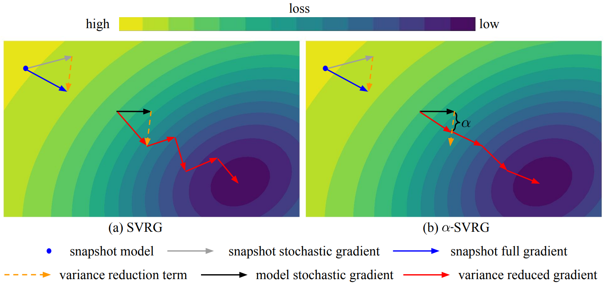

|
Yida (David) Yin I am an incoming Ph.D. student at Princeton University, advised by Prof. Zhuang Liu. I received my Bachelor's degree in Computer Science and Applied Mathematics from UC Berkeley. At Berkeley, I am fortunate to collaborate with many great researchers, including Dr. Roei Herzig, Prof. Trevor Darrell, Dr. Zhuo Xu, and Prof. Jiachen Li. Email / Google Scholar / Twitter / Github |
{kind=link}
Publications (* equal contribution)
|
|
Generative Modeling of Weights: Generalization or Memorization?Boya Zeng, Yida Yin, Zhiqiu Xu, Zhuang Liuarxiv 2025 [Paper] [Code] [Project Page] |
|

|
Idiosyncrasies in Large Language ModelsMingjie Sun*, Yida Yin*, Zhiqiu Xu, J. Zico Kolter, Zhuang LiuICML 2025 [Paper] [Code] [Project Page] [Press] |
|

|
In-Context Learning Enables Robot Action Prediction in LLMsYida Yin*, Zekai Wang*, Yuvan Sharma, Dantong Niu, Trevor Darrell, Roei HerzigICRA 2025 [Paper] [Code] [Project Page] |
|
|  |
A Coefficient Makes SVRG EffectiveYida Yin, Zhiqiu Xu, Zhiyuan Li, Trevor Darrell, Zhuang LiuICLR 2025 [Paper] [Code] [Project Page] |
|
Neural Network DiffusionKai Wang, Dongwen Tang, Boya Zeng, Yida Yin, Zhaopan Xu, Yukun Zhou, Zelin Zang, Trevor Darrell, Zhuang Liu*, Yang You*arxiv 2024 [Paper] [Code] |
||
Understanding Bias in Large-Scale Visual DatasetsBoya Zeng*, Yida Yin*, Zhuang LiuNeurIPS 2024 [Paper] [Code] [Project Page] |
||

|
Initializing Models with Larger OnesZhiqiu Xu, Yanjie Chen, Kirill Vishniakov, Yida Yin, Zhiqiang Shen, Trevor Darrell, Lingjie Liu, Zhuang LiuICLR 2024 (Spotlight) [Paper] [Code] | |
MATRIX: Multi-Agent Trajectory Generation with Diverse ContextsZhuo Xu*, Rui Zhou*, Yida Yin*, Huidong Gao, Masayoshi Tomizuka, Jiachen LiICRA 2024 [Paper] |
|
Website design from Jon Barron |